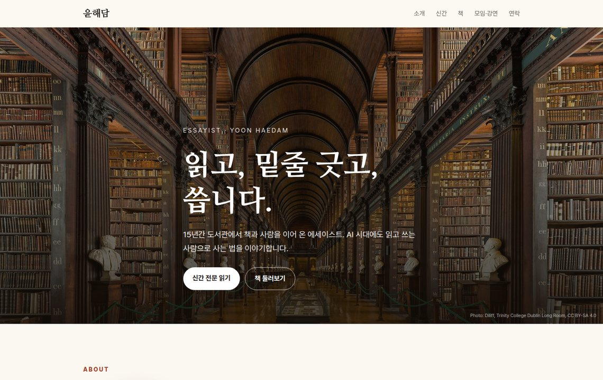
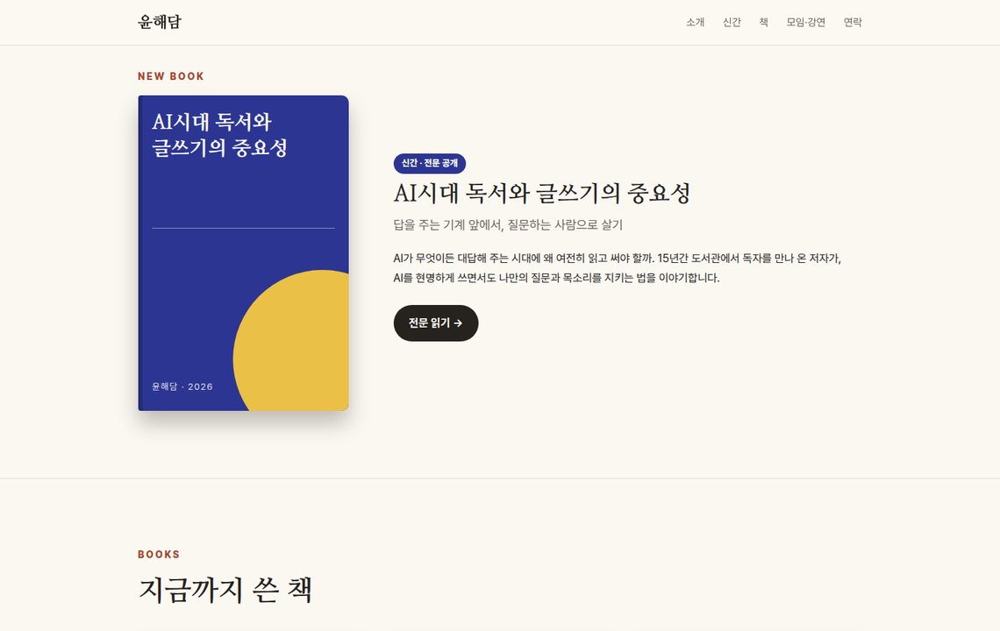
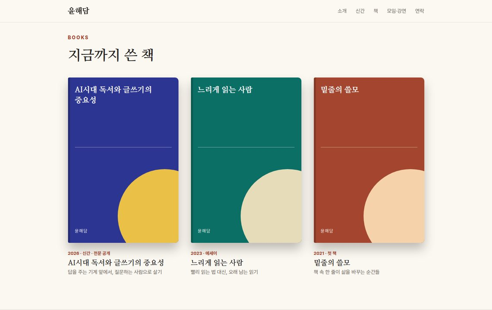
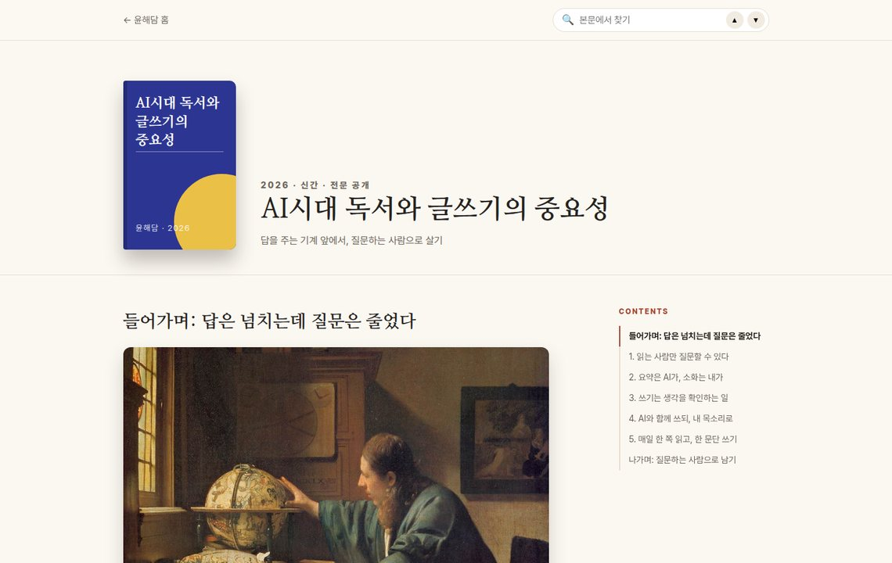
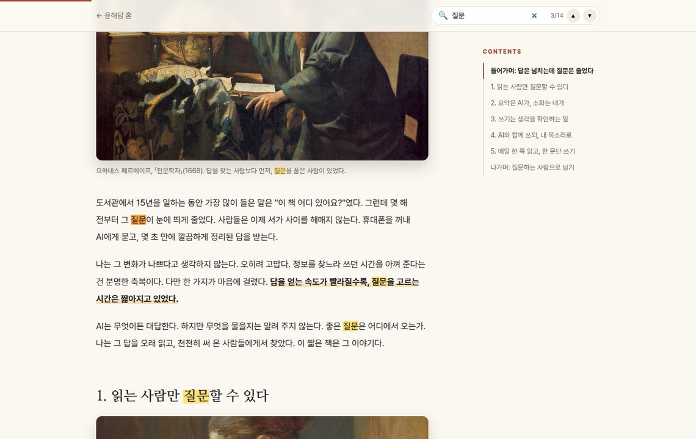
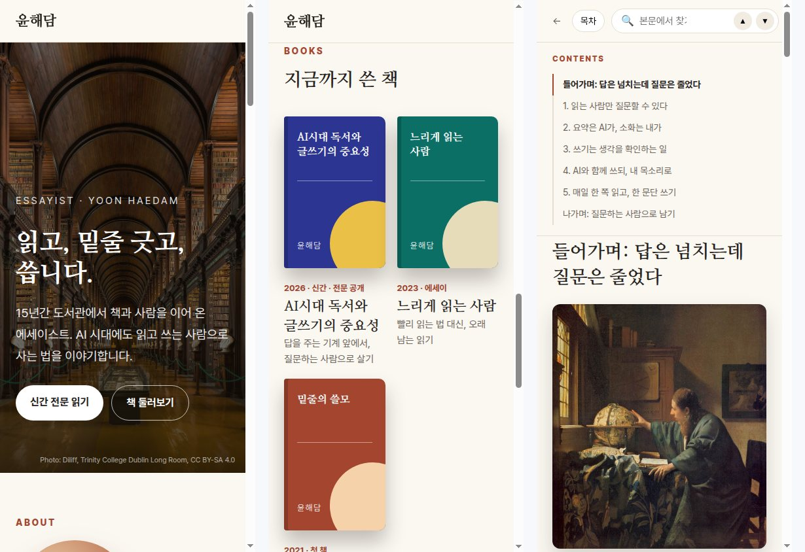

# AI시대 독서와 글쓰기의 중요성> 답을 주는 기계 앞에서, 질문하는 사람으로 살기## 들어가며: 답은 넘치는데 질문은 줄었다도서관에서 15년을 일하는 동안 가장 많이 들은 말은"이 책 어디 있어요?"였다. 그런데 몇 해 전부터그 질문이 눈에 띄게 줄었다. …## 1. 읽는 사람만 질문할 수 있다질문은 빈 머리에서 나오지 않는다. …
AI 문맹탈출을 위한 기본 도구 익히기 · 4강 실습
마크다운으로 쓰고, 깃허브에 담고, AI에게 맡겨서 세상에 공개하기
> 나는 작가인데, 내 웹사이트를 만들고 싶어
오늘 만들 것

1~3강에서 배운 터미널 · 마크다운 · 깃허브를 전부 씁니다.
전체 흐름
마크다운으로
2강
GitHub에서 만들기
3강
내 컴퓨터로 가져오기
1·3강
말로 설명하기
오늘의 핵심
GitHub Pages
3강
사람이 하는 일은 글을 쓰고, 말로 부탁하고, 확인하는 것뿐이에요.
오늘의 주인공 (가상 인물)
15년간 공공도서관 사서로 일하다 작가가 됐어요. 독서 모임 '밑줄클럽'을 운영합니다.
| 책 | 연도 | 상태 |
|---|---|---|
| AI시대 독서와 글쓰기의 중요성 | 2026 | 신간 · 원고 전체 공개 |
| 느리게 읽는 사람 | 2023 | 소개만 |
| 밑줄의 쓸모 | 2021 | 소개만 |
인물과 책은 실습을 위해 만든 가상의 것입니다. 여러분은 자기 이야기로 해 보세요.
Step 1
편집기가 글쓰기를 얼마나 편하게 해 주는지 보기
먼저 재료 준비
book.md 하나-로 (인터넷 주소가 되기 때문)정리가 잘 된 폴더는 AI도 한눈에 이해합니다. 사람에게 좋은 정리가 AI에게도 좋아요.
마크다운 편집기 (VS Code · 옵시디언) 화면 구성
# AI시대 독서와 글쓰기의 중요성> 답을 주는 기계 앞에서, 질문하는 사람으로 살기## 들어가며: 답은 넘치는데 질문은 줄었다도서관에서 15년을 일하는 동안 가장 많이 들은 말은"이 책 어디 있어요?"였다. 그런데 몇 해 전부터그 질문이 눈에 띄게 줄었다. …## 1. 읽는 사람만 질문할 수 있다질문은 빈 머리에서 나오지 않는다. …
편의 기능 ① 개요(Outline)
200쪽짜리 원고에서도 "3장" 을 누르면 그 자리로 갑니다. 스크롤을 굴릴 필요가 없어요.
제목만 모아 보면 꼭지 순서가 어색한 곳, 빠진 장이 한눈에 보여요. 퇴고할 때 가장 먼저 보는 곳입니다.
##을 붙여 새 제목을 쓰면 개요에도 바로 나타나요.
개요
VS Code: 왼쪽 아래 OUTLINE (오른쪽으로 옮길 수 있음) · 옵시디언: 오른쪽 사이드바 개요
편의 기능 ② 찾기와 바꾸기
사람들은 이제 서가 사이를 헤매지 않는다. 휴대폰을 꺼내 인공지능에게 묻고,몇 초 만에 깔끔하게 정리된 답을 받는다. 인공지능은 무엇이든 대답한다.하지만 무엇을 물을지는 알려 주지 않는다. 요즘 나는 인공지능을 이렇게 쓴다.
| 하고 싶은 일 | 단축키 (윈도우) | 설명 |
|---|---|---|
| 이 파일에서 찾기 | Ctrl + F | 찾은 곳이 노랗게 표시, Enter로 다음 |
| 찾아서 바꾸기 | Ctrl + H | 23곳을 한 번에 바꾸기 |
| 폴더 전체에서 찾기 | Ctrl + Shift + F | 책 세 권 전체에서 "밑줄"이 나온 곳 찾기 |
맥은 Ctrl 대신 ⌘ Cmd. VS Code와 옵시디언 모두 같은 단축키예요.
편의 기능 ③ 수준 바꾸기와 꼭지 옮기기
# 하나를 더하거나 빼면 장 ↔ 절이 바뀌어요.
## 매일 한 쪽 읽기 ↓ # 하나 추가 ### 매일 한 쪽 읽기
VS Code 확장 'Markdown All in One': Ctrl+Shift+] / [
제목 옆 ▾를 누르면 그 꼭지 본문이 접혀요.
▸ ## 1. 읽는 사람만 … ▸ ## 2. 요약은 AI가 … ▾ ## 3. 쓰기는 생각을 … "머릿속으로는…"
긴 원고도 제목만 남겨서 한 화면에
접은 꼭지에서 Alt+↑/↓를 누르면 꼭지 전체가 위아래로 이동해요.
▸ ## 2. 요약은 AI가 … ▸ ## 1. 읽는 사람만 … ↑
복사·잘라내기·붙여넣기 없이 순서 바꾸기
한글 문서에서 몇 쪽을 잘라 옮기다 서식이 깨졌던 경험, 이제 없습니다. 글자와 기호뿐이라 무엇을 옮겨도 그대로예요.
편의 기능 ④ 미리보기와 글자 수
## 3. 쓰기는 생각을 확인하는 일  *테르보르흐, 「편지를 쓰는 여인」* 생각은 머릿속에 있을 때 언제나 그럴듯하다. 쓰다가 막히는 바로 그 지점이 **내가 아직 모르는 곳**이다.
테르보르흐, 「편지를 쓰는 여인」
생각은 머릿속에 있을 때 언제나 그럴듯하다. 쓰다가 막히는 바로 그 지점이 내가 아직 모르는 곳이다.
VS Code: Ctrl+K 다음 V (나란히 미리보기) · 옵시디언: Ctrl+E (읽기 모드) · 글자 수·단어 수는 아래 상태 표시줄에
한 장 요약
| 하고 싶은 일 | VS Code | 옵시디언 |
|---|---|---|
| 찾기 / 바꾸기 | Ctrl+F / Ctrl+H | Ctrl+F / Ctrl+H |
| 폴더 전체에서 찾기 | Ctrl+Shift+F | Ctrl+Shift+F |
| 파일 빨리 열기 | Ctrl+P | Ctrl+O |
| 미리보기 | Ctrl+K → V | Ctrl+E |
| 굵게 / 기울임 | Ctrl+B / Ctrl+I (확장) | Ctrl+B / Ctrl+I |
| 줄·꼭지 위아래로 옮기기 | Alt+↑ / Alt+↓ | 개요 패널에서 끌어 옮기기 |
| 모든 명령 검색 | Ctrl+Shift+P | Ctrl+P |
맥은 Ctrl 대신 ⌘ Cmd, Alt 대신 ⌥ Option. 버전에 따라 조금 다를 수 있으니 "모든 명령 검색"에서 이름으로 찾아도 돼요.
Step 2 · 3
웹사이트가 살 집을 짓고, 내 컴퓨터로 열쇠 가져오기
GitHub에서 새 저장소 만들기
author-site,Public이라도 남이 마음대로 고칠 수는 없어요. 볼 수만 있습니다.
클론(clone)이란?
파일만 받아 와요. 고친 내용을 다시 올릴 길이 없어요.
파일과 기록을 통째로 가져오고, GitHub와 연결된 상태로 남아요. 고친 뒤 push하면 그대로 올라가요.
저장소 화면의 초록색 Code 버튼 → HTTPS 주소 옆 📋를 눌러 주소를 복사해 두세요.
터미널에서 클론하기
~ $ cd Documents # 문서 폴더로 이동 ~/Documents $ git clone https://github.com/내아이디/author-site.git Cloning into 'author-site'... Receiving objects: 100% (3/3), done. ~/Documents $ cd author-site # 받아 온 폴더로 들어가기 ~/Documents/author-site $ ls README.md # 이제 '내 원고' 폴더의 about.md 와 books 폴더를 여기로 복사해 넣으세요 (탐색기에서 끌어다 놓아도 OK) ~/Documents/author-site $ ls README.md about.md books
1강에서 배운 cd와 ls, 3강에서 배운 git clone. 배운 것만으로 충분해요.
Step 4
바이브 코딩: 말로 설명하고, 보고, 고쳐 달라고 하기
AI 부르기
~/Documents/author-site $ claude # 또는 codex, gemini ● 안녕하세요! 이 폴더(author-site)에서 무엇을 도와드릴까요?
AI는 켠 폴더 안에서 일해요. 꼭 저장소 폴더에서 켜세요.
처음 켜면 브라우저가 열리고 계정 로그인을 안내해요.
파일을 만들거나 명령을 실행하기 전에 물어봐요. 읽고 눌러 주세요.
첫 번째 부탁 · 무엇을 원하는지
● 폴더를 살펴볼게요. about.md 1개, 책 3권 (원고 전체 1권, 소개만 2권) ● 이렇게 만들면 어떨까요? 1. 첫 화면: 큰 사진, 작가 소개, 신간, 책 목록, 연락처 2. 책 읽기 화면: 원고를 그대로 보여 주고 오른쪽에 목차 3. 원고(.md)를 고치면 사이트에 자동 반영되도록 ● 두 가지만 여쭤볼게요. 원하는 분위기가 있나요? 연락받을 이메일 주소는요?
AI가 계획을 먼저 보여 주고 질문을 해요. 대답하면서 내 사이트의 모습이 정해집니다.
두 번째 부탁 · 구체적으로
"차분하고 따뜻하게"처럼 느낌을 말로 설명하면 돼요. 색 이름을 몰라도 괜찮아요.
AI가 원고를 읽고 꼭지 내용에 맞는 그림을 스스로 찾아 와요.
"저작권 걱정 없는", "출처 표기"처럼 지켜야 할 것을 꼭 말해 주세요.
AI가 일하는 모습
● 원고의 7개 꼭지를 읽고 어울리는 그림을 찾았어요. 모두 퍼블릭 도메인 명화예요. 들어가며 → 페르메이르 「천문학자」 (질문을 품은 사람) 1장 → 프라고나르 「책 읽는 소녀」 2장 → 슈피츠베크 「책벌레」 (책은 많아도 읽는 건 나) 3장 → 테르보르흐 「편지를 쓰는 여인」 … ● 파일을 만들어도 될까요? + index.html 첫 화면 + book.html 책 읽기 화면 (목차 · 본문 찾기) + assets/style.css 디자인 + assets/site.js 원고(.md)를 읽어 화면에 그리는 코드 + content/books.json 책 목록 + books/ai-reading/img/ 그림 7장 ❯ 1. 예 2. 아니요, 다르게 해줘 ● 완료했어요. 원고에는 그림 줄만 추가했고 본문은 건드리지 않았어요.
올리기 전에 내 컴퓨터에서 확인
● 미리보기 서버를 켰어요. http://localhost:8000 을 브라우저에서 열어 보세요.
localhost = "내 컴퓨터"라는 뜻. 나만 볼 수 있는 시사회예요.

마음에 안 드는 곳은 말로 고치기
실제로 이 예시 사이트도 이 세 가지를 고쳐 가며 완성했어요. 보고 → 말하고 → 다시 보기를 반복하면 됩니다.
Step 5 · 세상에 공개하기
● 커밋했어요: "작가 홈페이지 첫 버전" ● GitHub에 올렸어요. ● GitHub Pages를 켰어요. 1~2분 뒤 열려요: https://내아이디.github.io/author-site/
자세한 내용은 3강 'GitHub Pages' 장을 보세요.
완성
실제로 만들어서 공개한 결과를 둘러봅니다
완성 ① 첫 화면
완성 ② 신간과 책 목록
신간 표지와 소개, '전문 읽기' 버튼

책 세 권. 표지는 그림 파일 없이 색과 글자로 만들었어요
새 책을 내면? books 폴더에 원고를 넣고 AI에게 "새 책 올려 줘" 하면 목록에 추가돼요.
완성 ③ 책 읽기 화면

## 제목으로 자동 생성편집기의 개요가 그대로 독자의 목차가 됐어요.
완성 ④ 본문 찾기와 그림

원고의 와 그 아래 *설명*이 그림과 캡션이 됐어요.
완성 ⑤ 휴대폰 화면

직접 둘러보기
이 강의와 함께 실제로 공개한
윤해담 작가 홈페이지
사이트 폴더에는 AI가 써 준 README.md도 들어 있어요. 새 책 올리는 법이 적혀 있습니다.
돌아보기
꼭 지켜 주세요
인터넷 그림을 아무거나 쓰면 안 돼요. 퍼블릭 도메인이나 CC 라이선스인지, 출처를 적었는지 AI에게 다시 확인하세요.
Public 저장소는 전 세계가 봐요. 집 주소, 전화번호, 개인 메모는 넣지 마세요.
AI가 내 원고를 마음대로 고치지 않았는지, 링크가 다 열리는지 직접 눌러 보세요.
이번 주 해 볼 것
##로git clone이미지 출처